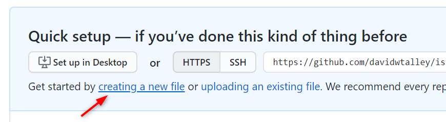
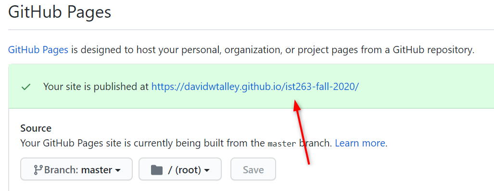

Work With GitHub
Our class uses GitHub as a repository for our html files, then we use its GitHub Pages function to display the work as public webpages. This involves a few steps you'll need to take:
- Create a repository and enable it for GitHub Pages display.
- Draft your html (and eventually CSS) in VS Code, then submit it to your GitHub repo.
- View your GitHub content in the browser.
Create a Repo
If you already have a personal repository you will use, skip this step.
- Login to your GitHub account.
- Click your profile icon at the upper right and select Your Repositories.

- Click the New CTA (call-to-action, also known as a "button") to create a new repository.

- Enter a name for your repository — all lower-case, no spaces!
- Click the Create Repository CTA.
Enable GitHub Pages Display
- With your new GitHub repo displayed on screen, you will see a Quick Setup screen with a Create new file link.

You will need something in your repo to enable web display, so follow these steps to add a file to your empty repo:- Click the creating a new file link.
- Enter the filename
index.html. - In the text editor, type the HTML comment:
<!-- index.html placeholder file -->plus some text like<p>Placeholder file</p>.

- Scroll down and click the green Commit Changes button.
- Select the Settings tab.
- Scroll down to the GitHub Pages heading, then confirm that your master branch is selected as the site Data Source. If not, follow instructions here to make that selection now.
- After selecting your master branch, GitHub will send you to the top of the settings display. Scroll down to the GitHub Pages heading again, and you will see above the data source selector "Your site is published at" plus a link the GitHub Pages address. Copy that URL to a browser window (or just click the link) and bookmark it. This will be the start of any of your GitHub Pages display URLs.
 - Edit the URL in your browser window address bar to add
/index.htmland press Enter.
Your URL should be formed like this:https://[your-GitHub-user-id].github.io/[your-repo-id]/index.html - Admire your first published web page!
Create Files and Submit to GitHub
- Open VS Code and add the code for your new .html page and save it on your local machine.
- Login to your GitHub account and open your personal repository.
- Navigate to the GitHub folder where you want to place your .html file.
- Select the Upload files CTA.
- Drag and drop from your file explorer or finder, or click Choose your files and select one or more files from your computer's file system, then click Open.
- Scroll down and select the Commit changes CTA.
- Add your filename in your browser window address bar, then click Enter.
Your URL should be formed like this:https://[your-GitHub-user-id].github.io/[your-repo-id]/your-filename.html - Admire your newly added or updated web page!
Add New Folders in GitHub
- Login to your GitHub account and open your personal repository.
- Navigate to the GitHub folder where you want to place your new subfolder(s).
- In the Name Your File input, enter the new folder's name (all lower-case, no spaces!) followed by a slash (/); repeat as needed to define the folder structure you want.
- Enter a new filename
index.htmlafter all your folder names are in place. - Type some text in editor window, something like "This will be the new index.html file."
- Scroll down and select the Commit changes CTA.
- You can now navigate to your new folder and upload files — .html, images, or others — as described above.
View a screen capture animation at YouTube.com or click on the embedded video below.